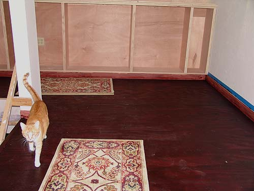
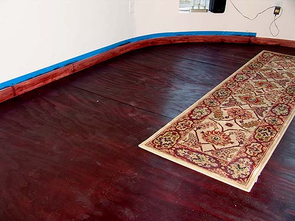
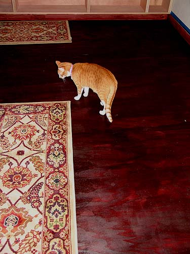
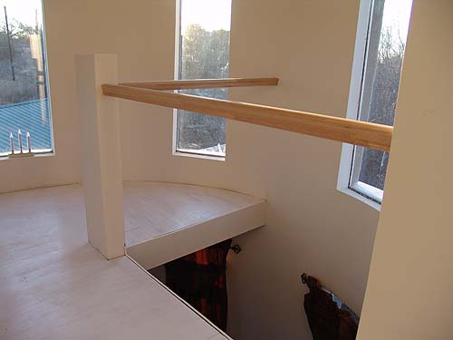
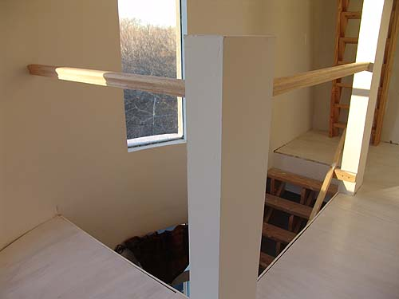

1/29/06
2nd floor stain and 3rd floor railings
The floors are dark. You can see every kitty cat footprint.
Not a good thing, but we'll keep a mop up there and
maybe get another rug or two. It's quite a rich look, otherwise.
Click HERE to return to older pictures

George doesn't see a need to walk on the rug.

Tons of dirt spots to clean up. But it sure is pretty.

George carefully avoiding the rug.

Third floor railing. There will be iron ballusters almost to the floor (once they get selected and purchased).

The railings are great. They don't move and were the largest I could find to buy on the internet.